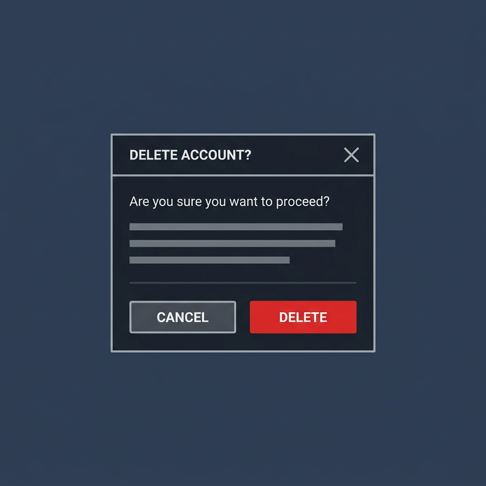
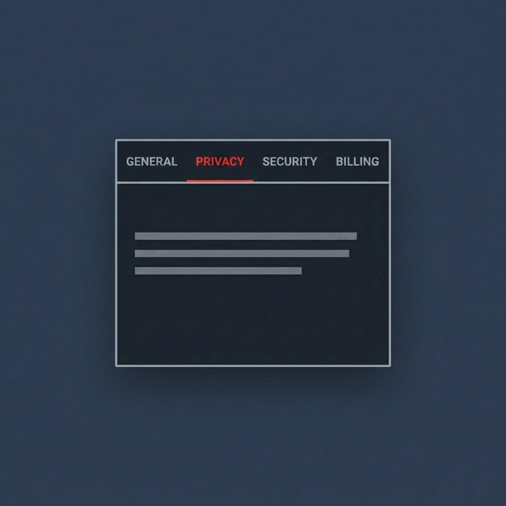
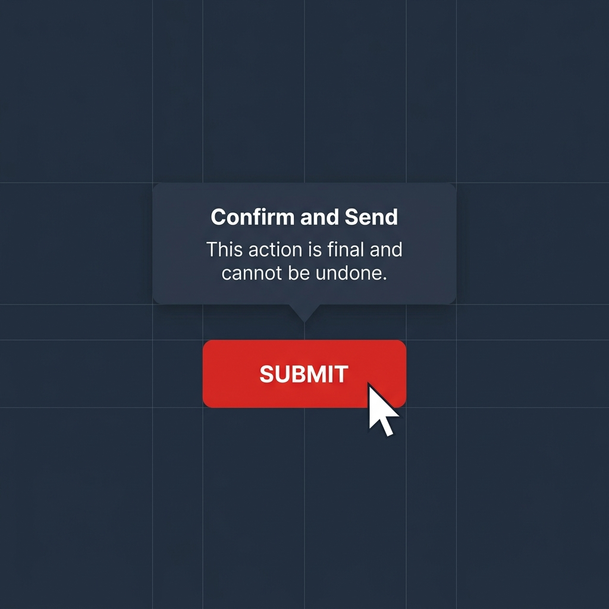

Accessible Components Library
Designing for everyone should not be an afterthought—it must be the foundation of everything we build. This library is a dedicated component system aimed at removing digital barriers and empowering every user through universally accessible design. By equipping teams with a truly equitable toolkit, we are taking a vital step toward a web where intuitive, beautiful, and highly usable experiences are the standard for everyone, regardless of how they navigate the digital world.
Component Library

Dialog
A fully accessible dialog box with focus trapping, ARIA roles, and Escape key support.

Tabs
Accessible tabbed interface with keyboard navigation. Includes automatic and manual activation variants.

Tooltip
Accessible standard tooltips and interactive non-modal toggletip dialogs.
Combobox
A fully accessible autocomplete combobox with keyboard navigation and ARIA live regions.